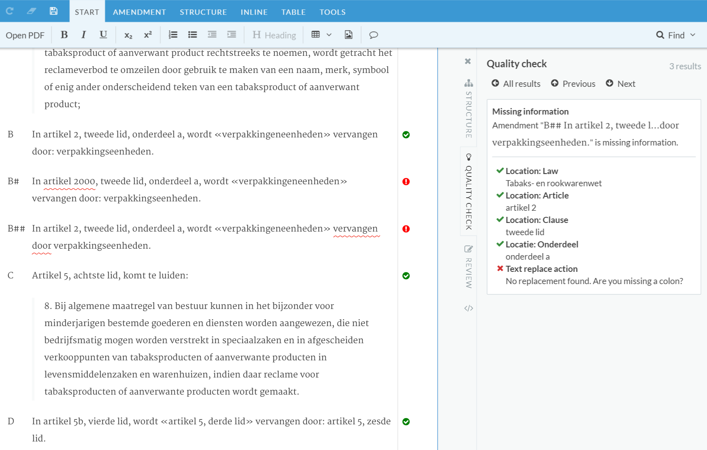

In section Recognizing location, action and operand information (Problem #2) it is shown how a graph is constructed and validated. The result of that validation is shown in the UI as well as the graph in the form of a table of extracted information.
Figure 1. Validation warnings
|  |
See Figure 1, “Validation warnings”: on the left-hand side you’ll see the amendment document. The amendment in clause B is valid, meaning all the location- and action information was extracted and validated successfully. Clause B# is invalid because article 2000 does not exist in the target law. This is signaled by the red squiggle underline. Clause B## is invalid because it is missing a colon after the words "vervangen door". On the right-hand side you’ll see the details of the warning for clause B##.